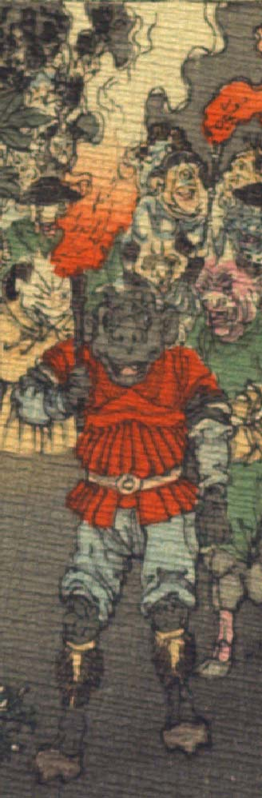

黒い肌の鬼。額に2本角を生やし、耳が大きい。鼻は潰れ、口は横に裂けている。衣服は異国風で、赤い上着と青色の股引、黒い脚絆を身に着けている。右手で松明を掲げている。
著作者：J.Dautremer／出典：親書誌：U426_nichibunken_0123：Le vieillard et les démons／日付：2006／資源識別子：U426_nichibunken_0123_0001_0001
Copyright (c)2010- International Research Center for Japanese Studies, Kyoto, Japan. All rights reserved.